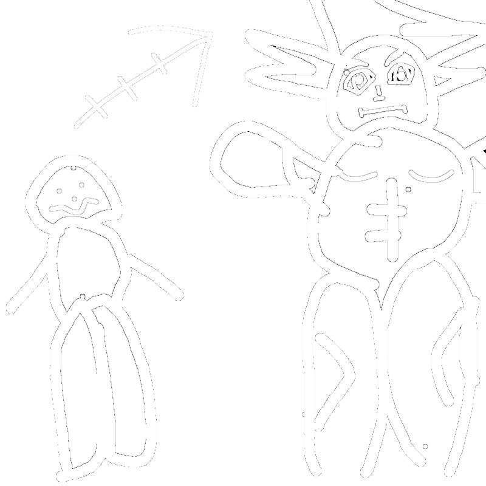
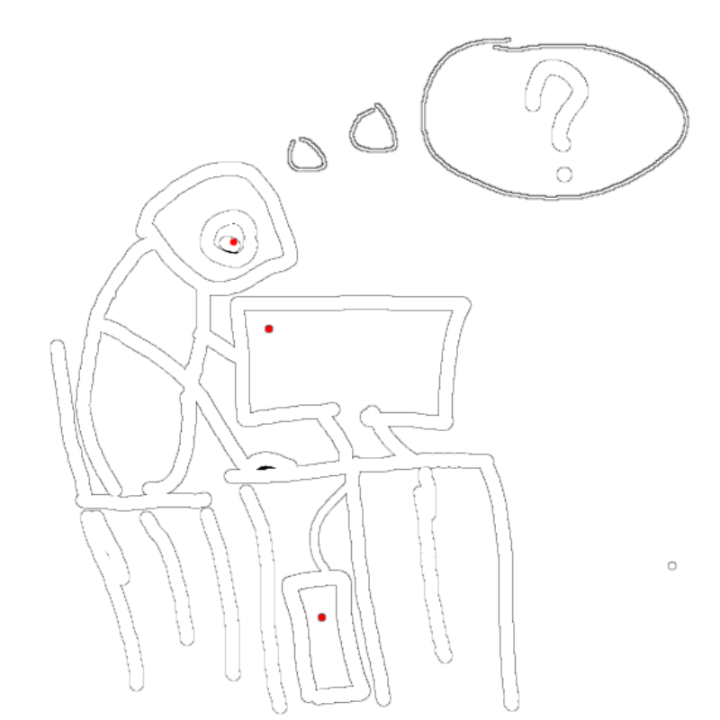
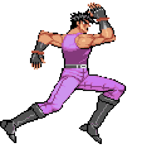

C взрослением человек задаёт вопрос - "А кто я? Кем я хочу быть?".
Однажды и я спросил это у самого себя, на что последовал встречный вопрос -
"Куда мне идти, если я целыми днями сижу за компьютером?". Тут я провёл логическую цепочку.
"Ага...компьютер, что делают на компьютере? Точно! Игры!". Мой 12-ти летний разум посчитал эту
идею гениальной и я пошёл в интернет для дальнейнего изучения информации.
Там я узнал что игры делают на каких-то языках программирования(???)


C ++
Я не знаю С--
Уже не помню как, но мой взгляд пал именно на С++. Не помню даже то, искал ли я что то
о нём в интернете, но точно знаю, что скачал приложение, которое научило выводить меня "Hello, World".
При этом я вообще ничего не понимал о самой технике программирования и кто же такие эти ваши программисты.
Сами знаете, что если сразу начать что-то делать в сфере, о которой ты ничего не знаешь, то из этого мало что получится и поэтому я решил забросить программирование.
Как я вернулся?
Лето... прекрасная пора, огромное колличество свободного времени.
Именно летом 2019 года при помощи невероятной решимости я смог начать.
Я смог начать свой путь, который продлился уже год! И я о нём не жалею.
Летом 2019 года я нашёл кучу сайтов с бесплатными курсами, разными уроками, видео по веб-программированию.
Я, как губка, с каждым днём узнавал всё больше и больше, и... как не странно, мне это не надоедало.
Даже наоборот, всё более и более нравилось. Я решал одну за одной задачи по html и css, набирался опыта, позже перешёл на js. Затем начал делать собственные проекты.

С О Б О Й
Моипроекты
Переверни все буквы
После того, как я запомнил основы основ стало понятно, что для полного погружения
в профессию недостаточно одной теории, либо же одной практики. Поэтому мне пришлось создать свой сайт.
Своими руками. Да, было трудно переходить с сайтов по обучению разработке на реальное поле боя, но к этому привыкаешь. Появился первый редактор кода. Появился свой стиль написания кода. Начали появляться новые ошибки и их решения. Начал приходить опыт.
Первый сайт я начал делать, когда читал одну интересную книгу по JS.
Оттуда я узнал про то, что сайт может узнавать дату и время пользователя. Соответственно, я воспользовался
этой возможностью. На первой странице нас ждёт приветствие. Оно разное, в зависимости от времени суток. Далее идёт поле ввода, которое запоминает значение по клику на ENTER и выводит именное приветсвие. После этого самая обычная галерея с тремя фото.
Код был написан ужасно. До того момента я ещё не знал, что jQuery устарел
и его можно заменить JS. Все анимации были написаны на том же jQ, вместо CSS. Механизм открытия фотографии был
сделан сплошными костылями свойсва animate. Правило DRY было нарушено миллиард раз.
Следующий сайт состоит из трёх страниц. Это обычный регистрационный сайт,
пароль и логин которого сохраняются не в базе данных, а в самом компьютере пользователя. Ничего необычного.
Можете сами посмотреть (но знайте, адаптировать сайт под телефоны я тогда ещё не любил). Нажимайте на синие записи и что-нибудь да выйдет).